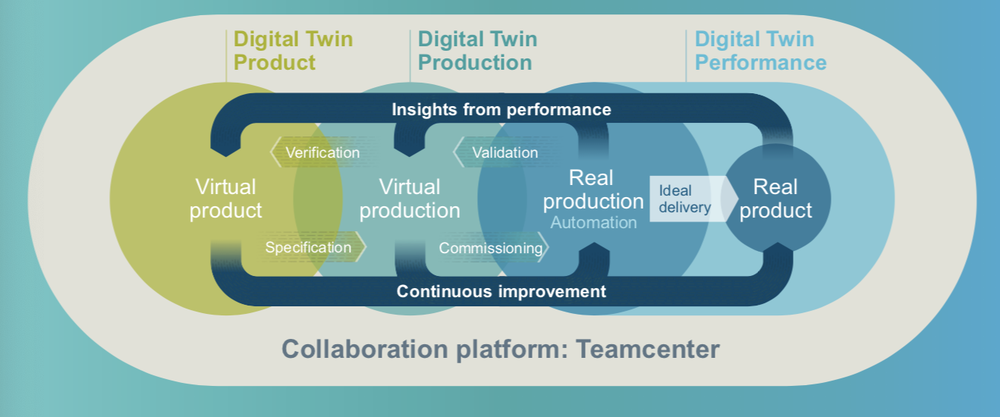
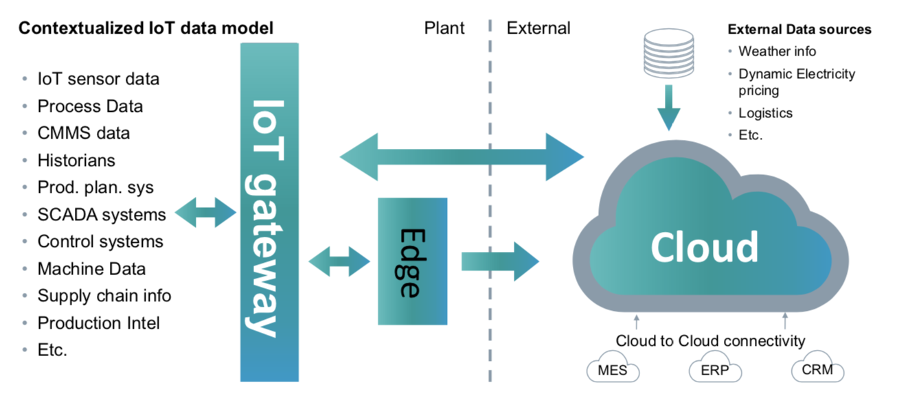

PRODUCT INTELLIGENCE AND DIGITAL TWIN
Author: Adam Updated: 23/05/2019
1. Digital Enterpise Strategy and Portfolio
Why the global manufacturing industry need to go digital? Because they need to move forward to the industry 4.0, which is a name given to the current trend of automation and data exchange in manufacturing technologies. Digitalization contains many fields including artifical intelligence, advanced robots, additive manufacturing (that is also considered as 3D printing), edge computing, internet of thing (IOT), and genernative design. According to the Gartner’s Emerging Technologies Hype Cycle 2018, most of the concepts in digitalization are on the rise or at the peak.

Various technological forces are transforming the industry through the ways that products come to life (ideation), to be realized (realization), and to evolve (utilization). Manufactures must embrace the technologes and transform their business into a Digital Enterprise, and digitalization should be applied across the entire the whole value chain from product design to services.
- product design: ideation
- production planning: from ideating to realization
- producting engineering: realization
- production execution: from realization to utilization
- services: utilization
A common digital thread enables continuous business transformation by compressing the innovation in lifecycle. The most holistic digital twin includes three aspects. The first aspect is to create the virtual product, in order to plan, design, simulate, predict, and varify product digitally, including mechanics and multiphysics, electronics and management of software. The second aspect is to generate the virtual production which includes planning, simulating, predicting and optimizing production digitally including PLC code generation and virtual commissioning. The last aspect is to operate in the real production. Thus, we can run production efficently and securely with totally integrated automation, and also get the real product.

2. Case of Siemens in the IoT Space
Siemens is the No.1 automation provider, delivering mission critical operation and automation technology, with 30M automation systems, 70M contracted smart meters. And Siemens already has over 800K connected products in the field today.
Consider this problem: how many data points/sensors are there in a Smart Phone? The answer could be quite simple. The common answer would be proximity sensor, motion sensor, ambient light sensor, moisture sensor, compass, and gyroscope. But compared with a driven train application which has 700 drives or inverters and 2,000 motors or geer boxes, this could be as simple as possible.
"Today less than 5% of all data generated in Manufacturing plants is analyzed for insights. This means we are still reactive rather than proactive harnessing the richness of the data enables us to be Predictive."
To step forward, we need to know some technologies that enables step change:
Cloud
- It hosts Servers, Networks, VMs, Applications and services.
- It has unlimited scalable compute power.
- It has unlimited Scalable storage capacity.
- It is secure with robust performance.
- It enables complex App development with advanced analytics.
- It uses 'pay as you use' pricing models.
Edge
- It is a process that data processing and analytics happens near the source of the data.
- It is used to preprocess data to avoid sending large volumes of data.
- It is used for mission critical applications.
- It is used when bandwidth is low.
- It reduces latency.
- It is used when working with sensitive data.
Maching Learning
- Machine Learning at its most basic is the practice of using algorithms to parse past data, to learn from it and to make a prediction / infer about something in the world.
- ML Algorithms can learn from experience, build models, without being explicitly programmed.
- Deep learning is a subset of machine learning in Artificial Intelligence (AI) that has networks which are capable of learning unsupervised, from data that is unstructured or unlabeled.
Application Programming Interface (API)
- APIs are made available so that other software developers can design products that are powered by its service.
- Modern APIs adhere to standards (typically HTTP and REST), that are developer-friendly, easily accessible and understood broadly.
- APIs have become so valuable that they comprise a large part of many business’ revenue.
- Example: A Siemens API on its IIoT platform enables a developer to access all his Machine Data in an App

IIoT increases business value for equipment suppliers and operators. For equipment suppliers, the IIOT platform increase service efficiency and lower warranty expenses. It also offers an additional services (availability) and enhance products via feedback loop to R&D. For equipment operators, the IIOT increase the uptime/asset availability. So thar the operators can optimize assets and also increase maintenance efficiency.
Siemens developed a platform called The Mendix, which is a leading low-code platform to create, integrate, deploy, manage and iterate modern business applications at scale.
3. Mindsphere Platform and Strategy
MindSphere is a cloud-based, open IoT operating system from Siemens including MindApps, MindSphere, and MindConnect. MindApps is used for asset transparency and analytical insights into machines, plants, fleets and systems. MindSphere are various cloud infrastructures of public, private or on-premise purposes. MindConnect is a secure plug which could play connection of Siemens and third-party products.
MindConnect has main characteristics: Dedicated IoT Connectors with MindConnect Nano, MindConnect IoT2040 and MindConnect FB S7-1500 MindConnect embedded in standard Siemens industrial products * MindConnect Software, APIs and Libraries for own integration into assets / devices
As a result, MindSphere is mainly used for the following purposes:
- Fleet Management
Always up to date the key data for your connected components and systems. Manage My Machines
Reduce unplanned down times and increase efficiency levels of your machinesProduct Intelligence
Automate insight from product performance data to create actionable intelligence with the complete digital twin
4. Product Intelligence introduction
Automate insight from product performance data to create actionable intelligence, so manufactures can close the loop between product design and actual product performance. Product Intelligence automatically answering questions you didn’t think you could even ask, for example:
- What kind of experience do our customers’ have with our products?
- How much visibility do we have into the performance of our suppliers?
- When we design a product, what do we know about performance in the field?
- Are we using actual quality performance as part the overall process?
Product intelligence can also leverage Big Data to transform the business model. Product Intelligence will unify disconnected product data into contextualized data lake. The procedure has four steps.
- Descriptive: what happened?
- Diagnostic: why did it happen?
- predictive: what happens next and when?
- prescriptive: when this happens, take these actions.
To be continued....
”Dell leverages Product Intelligence to explore billions of records and analyze millions of data combinations in under one minute to get actionable intelligence for excellence in supply chain and product quality.”